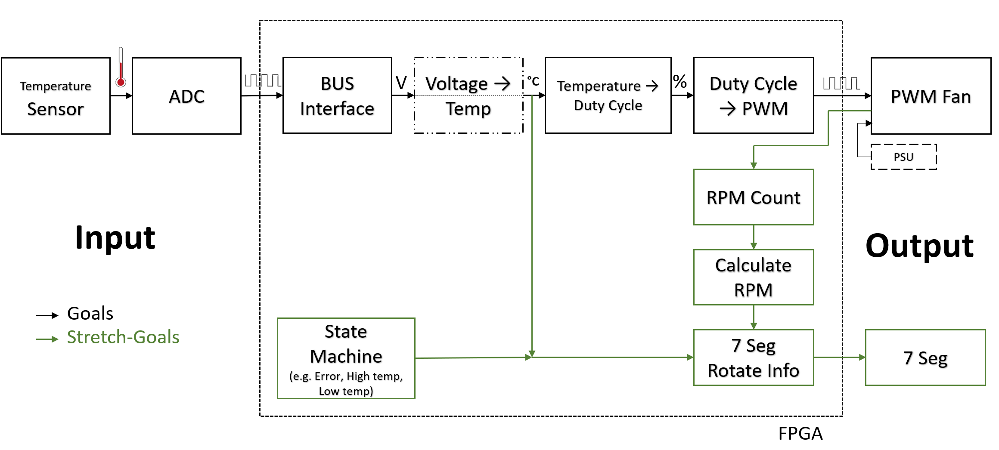
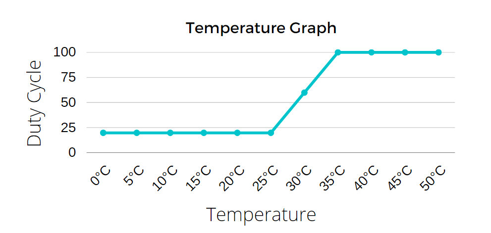
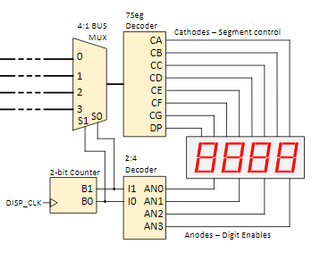

Approach
Contents
Approach#
General Approach#
To achieve high flexibility for the planed future expansion of the project, it was structured in Blocks. This is shown in the Block Diagram. Each Block was programmed individually and tested on hardware before moving on to the next Block. For the ReadTach Module an extra Simulation-file was used as described later. For the rest, a general Simulation-file was build to be able to test the general stability of the software.

All modules were programmed in behavioral Verilog where possible. All the Modules were programmed in the Vivado IDE. Structural assignments were sparely used to connect wires and registers. The Stretch goals are marked in green.
Individual Modules#
SPI (SPIMCP3201)#
For this module a serial communication bus had to be created. The SPI communication of the MCP3201 is given in the datasheet

According to this timing diagram, communication was implemented.
A 100 kHz clock divider was used to generate the SPI clock.
Another clock divider was used to generate a 1 Hz clock to sample the ADC once per second.
In the second clock divider the samples also get read.
Because the ADC needs time to sample the data, the first two bits are floating and the third is a Null bit. That's why in the code not all the 16 bit values of the received data are used. The last clock cycle is used to power down the ADC.
For debugging the bottom (0-11) LEDs were connected to the raw Data received by the ADC.
Conversion Modules#
The implementation here was strait forward with behavioral Verilog tho a few problems were encountered, which are described in the following segments.
Each module has Input data, Output Data, and a clk, at which rate the conversion has to be made. Here the standard 100 MHz clock was used as clock, but in hindsight a One Hz Clock would have sufficed, since the Sensor Data is also only refreshed at this frequency.
Voltage to Temperature#
Problems were encountered when trying to divide by numbers, which is required by some conversion-formulas. It was discovered that division is not directly possible in Verilog.
A workaround approach was chosen where the number is multiplied by 2/x, where x is the divisor. This factor got calculated on a calculator and then entered in the code. The result is then shifted by one bit to the right to divide by two.
The formula for the Temperature Sensor had to be calibrated. This was also done as described in this article.
Recapped a potentiometer was used to get the exact resistance value for different Temperatures, and the Value of the ADC was read for those. The potentiometer Value was calibrated with a potentiometer, so the temperature value could only be calibrated to its accuracy.
Temperature to Duty Cycle#
For this conversion, for now a simple formula will be generated based on this Graph:

For future work a feedback control loop should be developed.
ReadTach#
The approach to this Module was to use the external Tach signal received from the fan, as a clk signal for an always block. This approach didn't work because it is hardly possible and not recommended to use external signals as clock signals.
So the standard 100 MHz clock was used. This means, the rising edge had to be manually detected with code.
The plan is to update the RPM once per second, which only gives a maximum resolution of 30 RPM, but for this use-case it's good enough.
Seven Segment Driver#
Here the seven Segment Driver developed during project 9 of the digital logic course of realdigital was used.
The used architecture is described in this image:

It is used to display the Temperature and RPM. It alternates between these two values. To achieve this the Seven Segment Module had to be expended by a One Hz Clock Divider and a 1 bit counter.
Hardware Circuit#
For the Hardware circuit inspiration was drawn from an article from [AEQ-Web] 1 The interface to the Fan was implemented according to [specification for PWM Controlled Fans] 2
With these information a circuit for the full project could be developed.